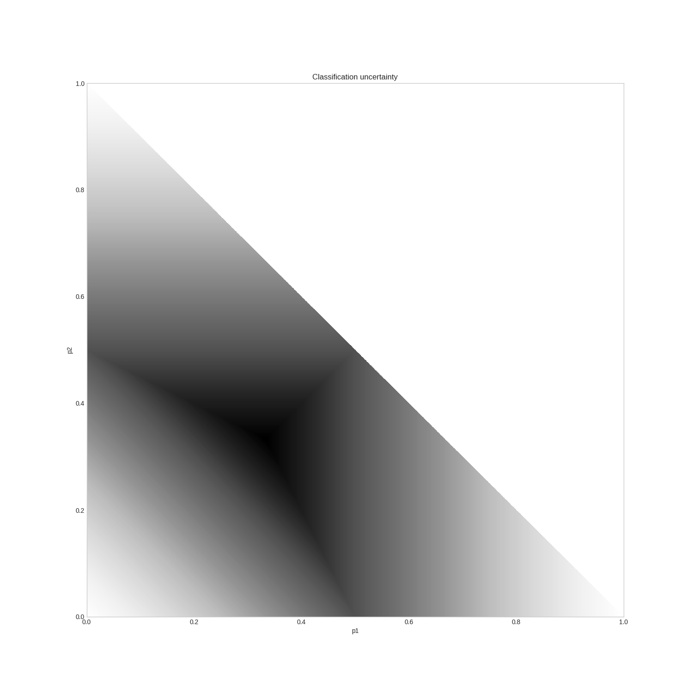
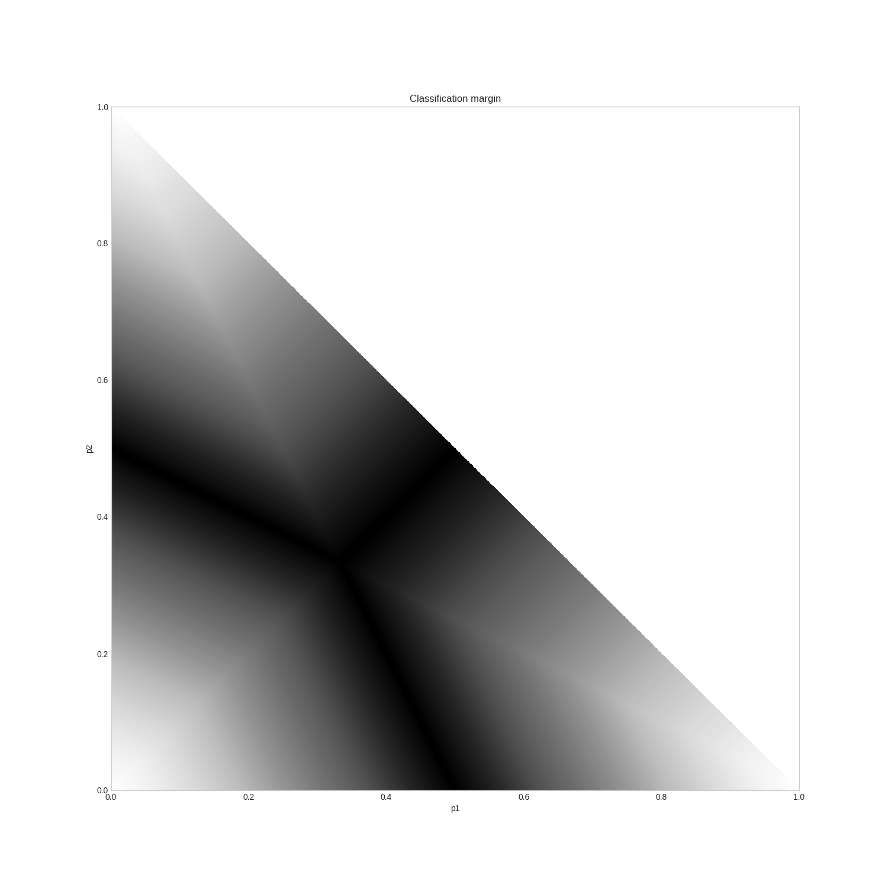
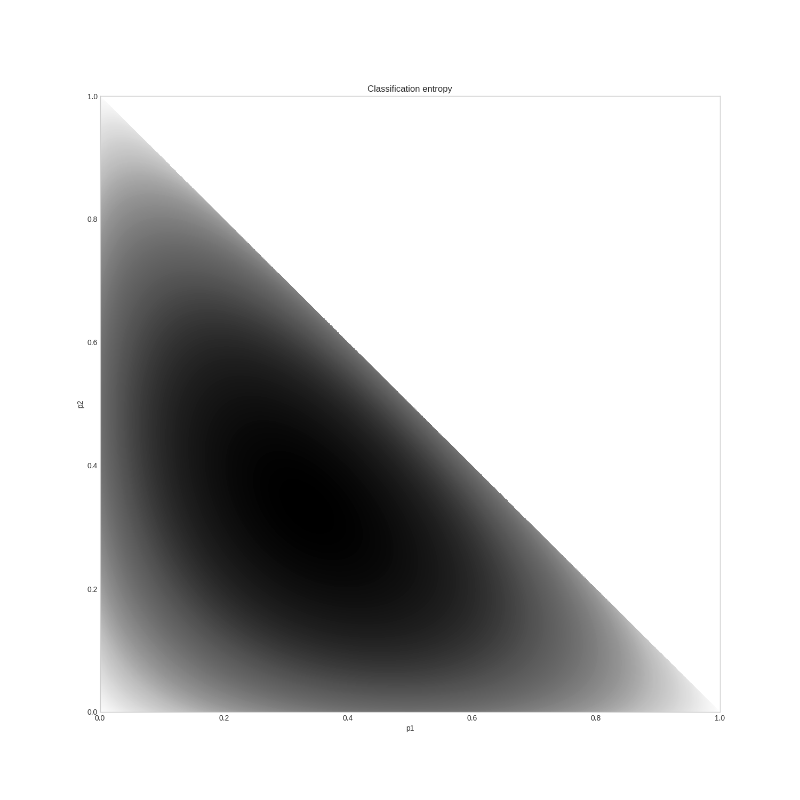

Uncertainty sampling¶
When you present unlabelled examples to an active learner, it finds you the most useful example and presents it for you to be labelled. This is done by first calculating the usefulness of prediction (whatever it means) for each example and select an instance based on the usefulness. The thing is, there are several ways to measure this. They are based upon the classification uncertainty, hence they are called uncertainty measures. In modAL, currently you can select from three built-in measures: classification uncertainty, classification margin and classification entropy. In this quick tutorial, we are going to review them. For more details, see Section 2.3 of the awesome book Active learning by Burr Settles.
Classification uncertainty¶
The simplest measure is the uncertainty of classification defined by
where \(x\) is the instance to be predicted and \(\hat{x}\) is the most likely prediction.
For example, if you have classes [0, 1, 2] and classification probabilities [0.1, 0.2, 0.7], the most likely class according to the classifier is 2 with uncertainty 0.3. If you have three instances with class probabilities
>>> proba
... [[0.1 , 0.85, 0.05]
... [0.6 , 0.3 , 0.1 ]
... [0.39, 0.61, 0.0 ]]
the corresponding uncertainties are
>>> uncertainty
... [0.15, 0.4, 0.39]
In the above example, the most uncertain sample is the second one. When querying for labels based on this measure, the strategy selects the sample with the highest uncertainty.
For this ternary classification problem, given the first two probabilities, the classification uncertainty looks like the following.
Classification margin¶
Classification margin is the difference in probability of the first and second most likely prediction, that is, it is defined by
where \(\hat{x_1}\) and \(\hat{x_2}\) are the first and second most likely classes. Using the same example we used for classification uncertainty, if the class probabilities are
>>> proba
... [[0.1 , 0.85, 0.05]
... [0.6 , 0.3 , 0.1 ]
... [0.39, 0.61, 0.0 ]]
the corresponding margins are
>>> margin
... [0.75, 0.3, 0.22]
When querying for labels, the strategy selects the sample with the smallest margin, since the smaller the decision margin is, the more unsure the decision. In this case, it would be the third sample. For this ternary classification problem, the classifier margin plotted against the first two probabilities are the following.
Classification entropy¶
The third built-in uncertainty measure is the classification entropy, which is defined by
where \(p_k\) is the probability of the sample belonging to the k-th class. Heuristically, the entropy is proportional to the average number of guesses one has to make to find the true class. In our usual example
>>> proba
... [[0.1 , 0.85, 0.05]
... [0.6 , 0.3 , 0.1 ]
... [0.39, 0.61, 0.0 ]]
the corresponding entropies are approximately
>>> entropy
... [0.5181, 0.8979, 0.6687]
The closer the distribution to uniform, the larger the entropy. Again, if we plot the entropy against the first two probabilities of a ternary classification problem, we obtain the following.
